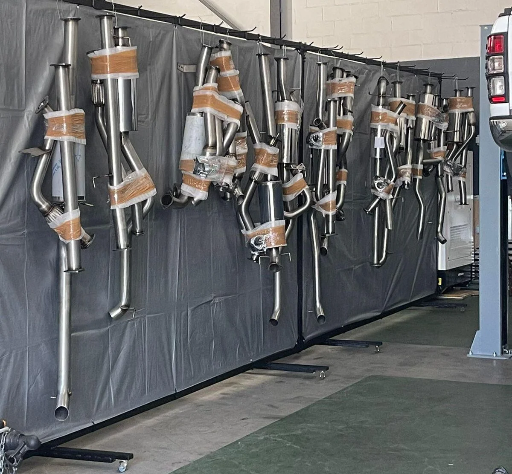

Sound with character
From a deep, purposeful note to something with unmistakable presence, the right configuration gives your bakkie the voice it should have had from the start.

CUSTOM BAKKIE EXHAUSTS · CAPE TOWN
A deeper note. Cleaner flow. A performance system selected for your petrol or turbo-diesel vehicle—and fitted by people who understand 4x4s.
Your exhaust changes the way your bakkie feels every time you start it. We help you choose a performance setup that suits the engine, the way you drive and the sound you actually want—then fit it properly in our Rivergate workshop.
No vague catalogue promises. Send us your exact vehicle details and we’ll tell you what makes sense.
From a deep, purposeful note to something with unmistakable presence, the right configuration gives your bakkie the voice it should have had from the start.
Correctly sized and routed pipework can reduce unnecessary restriction and help a petrol or turbo-diesel engine breathe more freely.
A suitable freer-flowing system may help the engine feel more willing through the low and mid-range. Results depend on the vehicle and setup.
Vehicle-matched mounting, routing and clearances matter on-road and off. We focus on a clean installation—not a one-size-fits-all shortcut.
You know the moment: the key turns, the engine catches and the exhaust settles into a note that finally sounds like your bakkie should.
Tell us whether you want a deep tone, a harder edge or an unapologetically assertive sound. We’ll match the system to your petrol or turbo-diesel engine and the character you want.
Every engine has its own voice. The final note and performance response depend on the vehicle, engine and system configuration.
Hilux or Fortuner. Land Cruiser. Ranger or Everest. D-Max, Navara, Triton, Amarok and more. Availability and specifications depend on the exact year, engine and model.
Yes—the system configuration determines how deep, sharp or aggressive the result will be. Tell us what you want to hear when you turn the key and we’ll guide you towards the right setup.
A correctly selected freer-flowing system can reduce unnecessary restriction and may improve response on petrol and turbo-diesel engines. Actual results vary by engine and configuration, and some vehicles benefit from matching ECU calibration.
Yes. Send the year, model and engine, plus the sound you have in mind. We’ll confirm the available options and whether we need anything else before quoting.
We’re at Unit 1, River Park 2, 35 Columbus Crescent, Rivergate, Cape Town.
Send us the essentials. Your enquiry opens in WhatsApp so you can review it before sending.